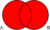

Section 6.5 Euler Diagrams
Euler diagrams predate Venn diagrams, but are quite distinct. They were introduced by Euler to aid in the understanding of syllogisms. In that context, they have certain deficiencies, some of which Venn tried to rectify with Venn diagrams.
Recall from Definition 2.1.1 that an Euler diagram is like a Venn diagram except that intersections of curve interiors are allowed to be empty, although the regions of intersection must still be connected. From this point of view a Venn diagram is a particular type of Euler diagram. If infinite intersections are allowed we refer to the diagrams as iEuler diagrams.
As used in the analysis of syllogisms, each region of a Venn diagram is shaded (in red in the table below) according to whether the region can contain any members. In this way any set system can be represented by a Venn diagram. In an Euler diagram a region is present if and only if it contains at least one member; there is no shading. As a consequence not all set systems may be represented by Euler diagrams; for example the reader can verify that the system \(\{ \emptyset, A, B, AC, BC \}\) cannot be drawn as an Euler diagram (although it can be drawn as an iEuler diagram).
Euler wrote four letters in February of 1761 which contain Euler diagrams as defined above (from the Brewster translation) [Eu] .
- LETTER CII. Of the Perfections of a Language. Judgements and Nature of Propositions, affirmative and negative; universal or particular.
- LETTER CIII. Of Syllogisms, and their different Forms, when the first Proposition is universal.
- LETTER CIV. Different Forms of Syllogisms, whose first Proposition is particular.
- LETTER CV. Analysis of some Syllogisms.
Euler always drew his diagrams as collections of circles, but remarks in Letter CIII, These circles, or rather these spaces, for it is of no importance of what figure they are of,.... We know of no written record that Euler ever made use of the familiar 3 circle Venn diagram in the study of syllogisms.
Chapter V of John Venn’s book Symbolic Logic contains an explanation and comparison of Venn and Euler diagrams [Ve81] . The second part of his historical notes contains much information about the history of diagrammic reasoning.
Since Venn’s time, his diagrams have since been extended to Venn-Pierce diagrams, which add extra information in the form of symbols inside the regions to enable them to be used as valid logical proof mechanisms. The book by Sun-Joo Shin [Sh] contains a clear discussion of the differences between Euler, Venn, and Pierce diagrams, and a proof that with some enhancements the Venn system provides a sound and complete logical representation system.
In the table below we show the corresponding set system, Venn diagram, and Euler diagram for 2-sets. Up to a relabelling of sets, all possibilities are shown (subject to the constraint that they include the empty set).
| Set system | Venn diagram | Euler diagram |
|---|---|---|
| \(\{ \emptyset, AB, B, AB \}\) | ||
| \(\{ \emptyset, A, AB \}\) |  |
|
| \(\{ \emptyset, A, B \}\) | ||
| \(\{ \emptyset, AB \}\) | ||
| \(\{ \emptyset, A \}\) | ||
| \(\{ \emptyset \}\) |  |
In Table 6.5.1 the Euler diagram for set system \(\{ \emptyset, AB \}\) is actually an iEuler diagram, there are two overlapping circles, one for \(A\) and one for \(B\text{.}\) Note also that the Euler diagram for \(\{ \emptyset \}\) is the entire plane, which is awkward. These are two limitations of Euler diagrams, in addition to the fact mentioned above, that not all set systems can be represented as Euler diagrams. However, this leads to a natural question: what is the complexity of determining whether a given set system is representable at an Euler diagram? One known result is found in the following theorem.
This theorem was proven in Stirling Chow’s Ph.D. thesis [Ch] via a reduction to a known NP-complete problem, that of determining whether a 3-connected planar graph is Hamiltonian or not. The gadgets used in the reduction would need significant modification to restrict the problem to Euler or simple Euler diagrams.
Another complexity result involving set systems and planar representations was given in Johnson and Pollack [JP] . However, their planar representation are neither Venn or Euler diagrams as we have defined them.